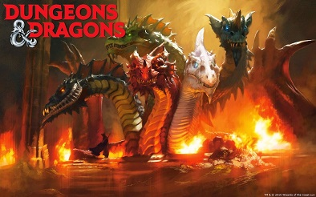
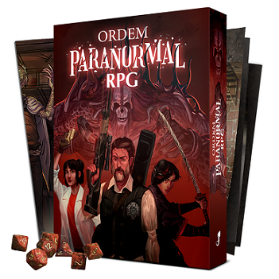
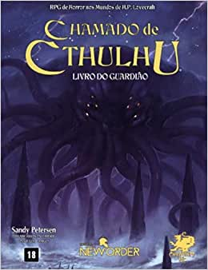

Dungeons & Dragons é um sistema de RPG de alta fantasia criado por Gary Gygax e Dave Arneson, que foi publicado pela primeira vez em 1974. Assim, o sistema é considerado por muitos como o pai do RPG moderno, pois Gary Gygax adaptou os wargames de miniatura que gostava de jogar para uma dinâmica com histórias. Portanto ele uniu as miniaturas dos wargames com elementos narrativos, criando uma maior imersão e engajamento dos jogadores.

Hoje o D&D está em sua 5ª Edição e vem sempre sendo aprimorado e validado entre os jogadores.
ORDEM PARANORMAL
Os perigos do Outro Lado O paranormal não vem para o nosso mundo de maneira fácil. Uma membrana separa e protege a Realidade do Outro Lado, a dimensão dos monstros e demônios. Essa barreira, porém, pode ser enfraquecida pelo Medo. Se aproveitando disso, cultistas fazem rituais para romper a membrana e invocar seres sobrenaturais, causando caos e destruição.
Para impedir que esses planos malignos se concretizem, organizações de investigadores se mantêm em atividade por todo o globo. Contra o paranormal, esses agentes são nossa primeira e última linha de defesa. Em Ordem Paranormal RPG, você assume o papel de agente de uma dessas organizações, a Ordo Realitas, vivendo uma vida dupla enquanto se esforça para evitar a vitória do caos. Fazendo uso de sua sagacidade, de um arsenal tecnológico ou mesmo de poderes vindos do Outro Lado, cabe a você arriscar a sua vida para proteger o nosso mundo. Ordem Paranormal RPG existe em três versões: digital, física e luxo.

CALL OF CHTULHU
Chamado de Cthulhu é um RPG de horror ficcional baseado no conto de mesmo nome escrito por H.P. Lovecraft e os então chamados Cthulhu Mythos, também inspirados no conto. O jogo, frequentemente abreviado como CoC, é publicado pela Chaosium.

O centro do terror lovecraftiano é o medo do desconhecido.